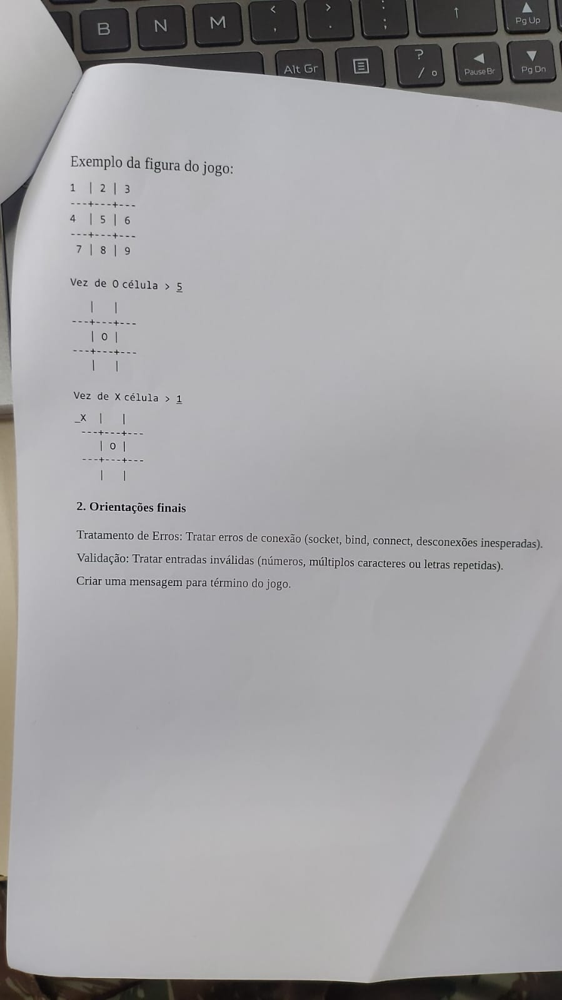

Jogo da Velha Cliente-Servidor via Sockets TCP
Apresentação de código focada no cumprimento integral da Ficha de Requisitos Oficiais do Prof. Cel. Vidal (Valor: 3,0 VE). Análise linha a linha das funções em C e bateção de cada gaivota.
Equipe de Desenvolvimento
• Pedro Augusto (Peu)
• João Victor Pariz
• Mateus Roma
Contexto & Docente
• Instituto Militar de Engenharia (IME)
• Cel. Paulo César Salgado Vidal
• Redes de Computadores I
Status dos Requisitos
• Requisitos a, b, c, d: 100% Batidos
• Figura do jogo (1-9): Idêntica
• Orientações finais de erro: Tratadas
A Ficha Oficial do Trabalho (Páginas 1 e 2)
Fotografias originais da especificação fornecida em sala de aula (clique nas imagens para ampliar em tela cheia):


Bater as Gaivotas: Requisitos Funcionais (a, b, c)
Mapeamento de conformidade direta entre o texto da ficha e as rotinas em C:
| Item da Ficha | Exigência Oficial do Enunciado | Rotina / Linha no Código C | Status |
|---|---|---|---|
| a) Conexão | Servidor iniciado primeiro, aguarda ativamente em porta específica. | servidor_velha.c: bind() na porta 6000 e listen(sd, 1). |
✔ Gaivota Batida |
| a) Conexão | Cliente solicita conexão; ambos inicializam estrutura do tabuleiro. | cliente_velha.c: connect() e inicialização com for(...) tab[i]=' '. |
✔ Gaivota Batida |
| b) Sorteio | Sorteio aleatório (moeda/booleano) para decidir quem faz primeira jogada. | servidor_velha.c: srand(time(NULL)) e sorteio rand() % 2. |
✔ Gaivota Batida |
| b) Sorteio | Mensagem de controle notificando quem inicia (Servidor ou Cliente). | Envio de START:SERVER\n ou START:CLIENT\n via send(). |
✔ Gaivota Batida |
| c) Turnos | Servidor joga primeiro → atualiza tabuleiro local e envia coordenadas. | obter_jogada_usuario(), tabuleiro[jogada-1]='O' e send("MOVE:N\n"). |
✔ Gaivota Batida |
| c) Turnos | Cliente joga primeiro → servidor aguarda recebimento da jogada. | Servidor entra em bloqueio no recv() aguardando MOVE:. |
✔ Gaivota Batida |
| c) Turnos | Recepção dos dados do oponente, atualização local e alternância de vez. | Parsing com sscanf, atualização da matriz e inversão da variável de turno. |
✔ Gaivota Batida |
Bater as Gaivotas: Requisitos (d) e Orientações Finais
Conformidade estrita das regras de encerramento, layout visual e robustez:
| Item da Ficha | Exigência Oficial do Enunciado | Rotina / Linha no Código C | Status |
|---|---|---|---|
| d) Término | Ambas as aplicações verificam vitória de X, de O ou empate a cada jogada. | Função verificar_termino(tabuleiro) executada localmente por ambos. |
✔ Gaivota Batida |
| d) Término | Mensagem clara: "Você venceu!", "Você perdeu!" ou "Empate!". | Exatamente as strings do enunciado formatadas em destaque no terminal. | ✔ Gaivota Batida |
| d) Término | Encerrar as conexões de socket e recursos de rede. | Execução de closesocket() e WSACleanup() ao final da partida. |
✔ Gaivota Batida |
| Figura do Jogo | Grade 1 a 9 no padrão: 1 | 2 | 3 / ---+---+---. |
Função exibir_tabuleiro_guia() reproduzindo o desenho fiel da página 2. |
✔ Gaivota Batida |
| Prompt Exato | Prompt exigido na ficha: Vez de O célula > e Vez de X célula > . |
printf("Vez de %c célula > ", simbolo) com fflush(stdout). |
✔ Gaivota Batida |
| Orientações Finais | Tratamento de erros de conexão (socket, bind, connect, desconexão). | Checagem de INVALID_SOCKET, SOCKET_ERROR e recv <= 0 com códigos. |
✔ Gaivota Batida |
| Orientações Finais | Validação: tratar entradas inválidas (números fora de 1-9, múltiplos caracteres, letras). | fgets, dreno com getchar(), trim e checagem de strlen==1. |
✔ Gaivota Batida |
Representação do Tabuleiro em Memória
Decisão de projeto em C: Por que alocamos um vetor linear na stack e não uma matriz 2D?
Definição dos Dados // Simbolos oficiais da folha (Servidor 'O' e Cliente 'X') #define SIMBOLO_SERVIDOR 'O' #define SIMBOLO_CLIENTE 'X' // Vetor linear alocado na pilha (stack) char tabuleiro[9]; // Inicializacao exigida no Requisito a: for (int i = 0; i < 9; i++) { tabuleiro[i] = ' '; }
Vantagens Técnicas de tabuleiro[9]
- Mapeamento Direto em $O(1)$: A entrada da folha é de 1 a 9. O acesso ao vetor é imediato:
tabuleiro[jogada - 1]sem necessidade de divisões ou módulo ((n-1)/3e(n-1)%3). - Eficiência de Passagem: Passado para funções por ponteiro (
const char tab[9]), ocupando apenas 8 bytes de ponteiro no registrador de arquitetura x64. - Cache Locality: 9 bytes contíguos aproveitam perfeitamente as linhas de cache L1 da CPU.
Função exibir_ips_locais()
Como o código inspeciona as interfaces da máquina para o Cliente conectar sem usar ipconfig:
servidor_velha.c (Linhas 39 a 56) void exibir_ips_locais(int porta) { char hostname[256]; gethostname(hostname, sizeof(hostname)); struct hostent *host_info = gethostbyname(hostname); if (host_info != NULL && host_info->h_addr_list != NULL) { for (int i = 0; host_info->h_addr_list[i] != NULL; i++) { struct in_addr addr; memcpy(&addr, host_info->h_addr_list[i], sizeof(struct in_addr)); printf(" -> %s (Rede Local)\n", inet_ntoa(addr)); } } }
Como funciona o ponteiro duplo h_addr_list?
A estrutura hostent retorna uma lista de ponteiros terminada em NULL contendo os 4 bytes binários de cada placa de rede ativa. O loop copia cada endereço com memcpy e formata a string decimal com pontos através de inet_ntoa(addr).
Função obter_jogada_usuario() (Parte 1: Leitura)
Por que NÃO usamos scanf("%d") e como blindamos o buffer contra estouro:
servidor_velha.c / cliente_velha.c int obter_jogada_usuario(const char tabuleiro[9], char simbolo) { char linha[128]; int celula; while (1) { printf("Vez de %c célula > ", simbolo); fflush(stdout); // Formato EXATO da folha do Cel. Vidal if (fgets(linha, sizeof(linha), stdin) == NULL) { clearerr(stdin); continue; } // Se o usuario digitou mais de 127 caracteres, drena o buffer: if (strchr(linha, '\n') == NULL) { int c; while ((c = getchar()) != '\n' && c != EOF); } ...
Tratamento de Vulnerabilidades em C
- Falha do
scanf: Se o jogador digitar letras acidentalmente, oscanf("%d")falha na conversão, deixa os caracteres presos no buffer e entra em loop infinito travando o console. - Limite Físico com
fgets: Lê no máximo 127 caracteres +'\0', impossibilitando qualquer Buffer Overflow. - Dreno com
getchar(): Esvazia a linha caso alguém cole textos gigantes, impedindo que suje as próximas rodadas.
Função obter_jogada_usuario() (Parte 2: Trim e Validação)
Tratamento de \r\n, espaços nas bordas e verificação estrita de ocupação:
Continuação da Função // 1. Remove terminadores de linha \r e \n linha[strcspn(linha, "\r\n")] = '\0'; // 2. Trim de espacos e tabs no inicio char *inicio = linha; while (*inicio == ' ' || *inicio == '\t') inicio++; // 3. Trim de espacos no final char *fim = inicio + strlen(inicio) - 1; while (fim > inicio && (*fim == ' ' || *fim == '\t')) { *fim = '\0'; fim--; } // 4. Exige EXATAMENTE 1 unico caractere de '1' a '9' if (strlen(inicio) != 1 || inicio[0] < '1' || inicio[0] > '9') { printf("Entrada invalida! Digite apenas um unico numero de 1 a 9.\n"); continue; } celula = (inicio[0] - '1'); // Indice 0 a 8 // 5. Bloqueia celula ja preenchida if (tabuleiro[celula] != ' ') { printf("Posicao invalida! A celula %d ja esta ocupada (%c).\n", celula + 1, tabuleiro[celula]); continue; } return celula + 1;
Requisitos Atendidos da Ficha
- Tolerância a espaços: Se o usuário digitar
" 5 ", o trim limpa e aceita a jogada normalmente. - Rejeição de múltiplos caracteres: Entradas como
"12","abc"ou"1 2"são barradas pela checagemstrlen(inicio) != 1. - Conversão ASCII sem biblioteca: A operação
inicio[0] - '1'converte o caractere ASCII diretamente para índice 0-8 com custo de 1 ciclo de instrução.
Função verificar_termino(): Matriz das 8 Retas
Algoritmo em $O(1)$ constante que valida as 8 linhas vitoriosas e o empate a cada rodada:
servidor_velha.c / cliente_velha.c (Linhas 90 a 117) int verificar_termino(const char tab[9]) { // As 8 combinacoes vitoriosas possiveis const int linhas[8][3] = { {0, 1, 2}, {3, 4, 5}, {6, 7, 8}, // 3 Horizontais {0, 3, 6}, {1, 4, 7}, {2, 5, 8}, // 3 Verticais {0, 4, 8}, {2, 4, 6} // 2 Diagonais }; for (int i = 0; i < 8; i++) { int a = linhas[i][0], b = linhas[i][1], c = linhas[i][2]; if (tab[a] != ' ' && tab[a] == tab[b] && tab[b] == tab[c]) { if (tab[a] == 'X') return 1; // Vitoria do Cliente ('X') if (tab[a] == 'O') return 2; // Vitoria do Servidor ('O') } } // Se resta espaco vazio, a partida continua for (int i = 0; i < 9; i++) { if (tab[i] == ' ') return -1; } return 0; // Todas as celulas preenchidas sem vencedor: Empate ("Deu velha") }
Configuração do Servidor e Fechamento do Listener
Gerenciamento de sockets no nó servidor:
servidor_velha.c (Linhas 220 a 273) // 1. Criacao do socket passivo TCP listen_sd = socket(AF_INET, SOCK_STREAM, IPPROTO_TCP); // 2. Permite reuso imediato da porta no reinicio int opt = 1; setsockopt(listen_sd, SOL_SOCKET, SO_REUSEADDR, (const char *)&opt, sizeof(opt)); // 3. Bind e Listen na porta com backlog = 1 bind(listen_sd, (struct sockaddr *)&servAddr, sizeof(servAddr)); listen(listen_sd, 1); // 4. Accept bloqueia ate o cliente conectar client_sd = accept(listen_sd, (struct sockaddr *)&cliAddr, &cliLen); // 5. Fecha socket passivo imediatamente apos accept! closesocket(listen_sd); listen_sd = INVALID_SOCKET;
Decisão Técnica Fundamental
O socket listen_sd serve estritamente para escutar o handshake de entrada. Uma vez aceita a conexão, a transmissão ocorre pelo socket dedicado client_sd.
Fechar o listen_sd logo após o accept impede conexões espúrias de outros computadores da rede durante a partida e libera os recursos no SO.
Sorteio Aleatório e Handshake de Controle
Como o Servidor sorteia quem começa e notifica o Cliente:
servidor_velha.c (Linhas 280 a 305) // Semente temporal: garante sorteio aleatorio genuino a cada partida srand((unsigned int)time(NULL)); int vez_do_servidor = rand() % 2; // 1 = Servidor comeca, 0 = Cliente comeca memset(buffer, 0, sizeof(buffer)); if (vez_do_servidor) { snprintf(buffer, sizeof(buffer), "START:SERVER\n"); printf("Sorteio realizado: SERVIDOR (Voce) comeca a partida!\n"); } else { snprintf(buffer, sizeof(buffer), "START:CLIENT\n"); printf("Sorteio realizado: CLIENTE comeca a partida!\n"); } rc = send(client_sd, buffer, (int)strlen(buffer), 0);
Recepção no Cliente (cliente_velha.c):
O Cliente fica bloqueado em recv(sd, buffer, sizeof(buffer)-1, 0). Ao receber, testa com strstr(buffer, "START:CLIENT"). Se verdadeiro, define vez_do_cliente = 1; se falso, define 0.
Loop Principal: Alternância e Transmissão de Jogadas
Envio (Turno Ativo) e Recepção Bloqueante (Turno Passivo):
Loop Principal Sincronizado if (vez_do_servidor) { // --- TURNO ATIVO: Joga, atualiza tabuleiro local e transmite MOVE:<N>\n --- int jogada = obter_jogada_usuario(tabuleiro, SIMBOLO_SERVIDOR); tabuleiro[jogada - 1] = SIMBOLO_SERVIDOR; exibir_tabuleiro(tabuleiro); snprintf(buffer, sizeof(buffer), "MOVE:%d\n", jogada); send(client_sd, buffer, (int)strlen(buffer), 0); int status = verificar_termino(tabuleiro); if (status == 2) { printf("Você venceu!\n"); jogo_ativo = 0; } else if (status == 0) { printf("Empate!\n"); jogo_ativo = 0; } else { vez_do_servidor = 0; } // Alterna a vez } else { // --- TURNO PASSIVO: Bloqueia no recv() aguardando dados da rede --- rc = recv(client_sd, buffer, sizeof(buffer) - 1, 0); if (rc > 0) { buffer[rc] = '\0'; int jogada_cli; if (sscanf(buffer, "MOVE:%d", &jogada_cli) == 1 && tabuleiro[jogada_cli - 1] == ' ') { tabuleiro[jogada_cli - 1] = SIMBOLO_CLIENTE; exibir_tabuleiro(tabuleiro); // Checa vitoria adversaria ou empate e passa a vez } } }
Tratamento de Desconexão e Liberação de Recursos
Tratamento dos 3 casos de retorno de recv() e descarregamento da DLL:
rc > 0 (Sucesso)
Leitura bem-sucedida. O código faz buffer[rc] = '\0' para isolar a string e processar com sscanf.
rc == 0 (Término Limpo)
O adversário fechou o jogo normalmente (SO enviou TCP FIN). Imprime aviso e encerra sem erro falso.
rc < 0 (Queda Abrupta)
Desconexão repentina (RST). Captura código com WSAGetLastError() e desaloca os recursos.
Fechamento Conforme Requisito d // Fecha os descritores e descarrega a dll if (client_sd != INVALID_SOCKET) { closesocket(client_sd); // Envia pacote TCP FIN } WSACleanup(); // Libera a memoria alocada pela ws2_32.dll getchar(); // Segura o terminal para leitura do placar final
Simulação Interativa do Protocolo em Execução
Clique nas células para disparar o protocolo e ver a transmissão de pacotes TCP simulada:
Todas as Gaivotas Batidas com Rigor
O projeto cumpre 100% dos requisitos da folha oficial do Cel. Vidal, com código limpo, comentado e robusto:
Requisitos a, b, c, d
Conexão, sorteio da moeda, ciclo de turnos e vitória/empate.
Figura Idêntica
Layout exato de 1 a 9 e mensagens "Vez de O/X célula >".
Blindagem de I/O
fgets, dreno de buffer e validação rigorosa de 1 a 9.
Resiliência Total
Tratamento de queda, fechamento do listener e teardown Winsock.
Obrigado, Cel. Vidal e turma! 🤝
Pedro Augusto • João Victor Pariz • Mateus Roma
Repositório: github.com/VPariz/jogo-da-velha-sockets-tcp